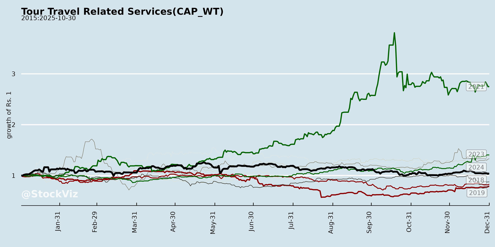
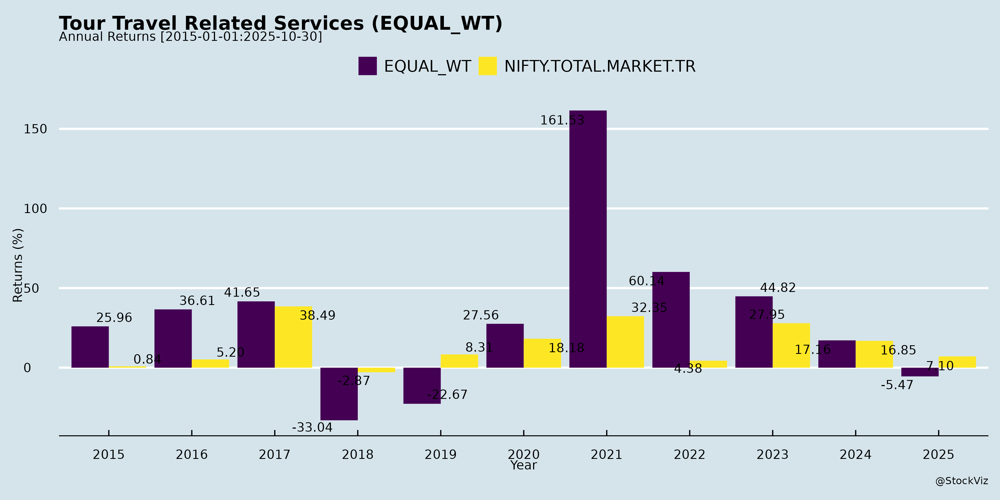
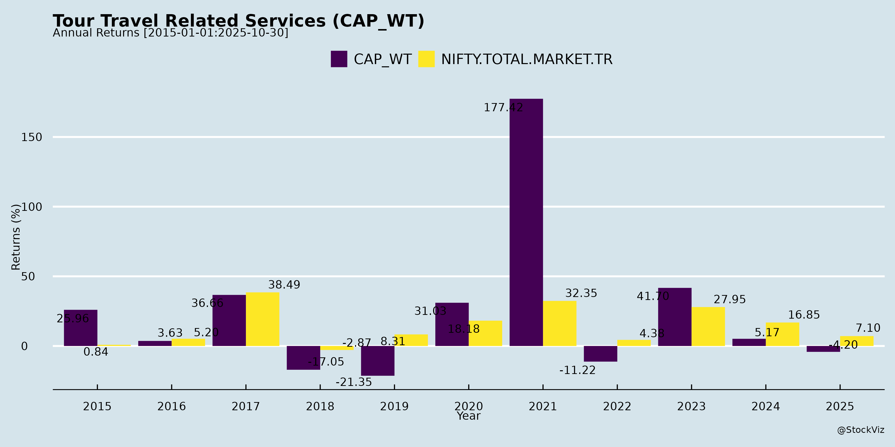
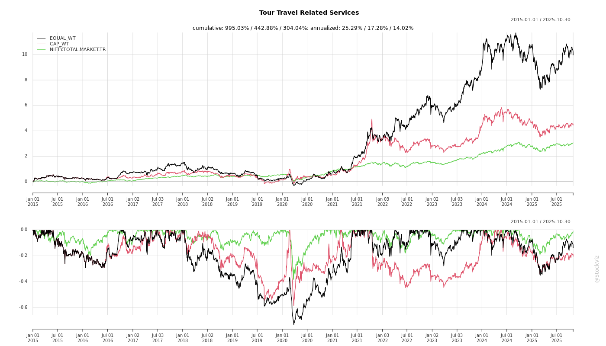
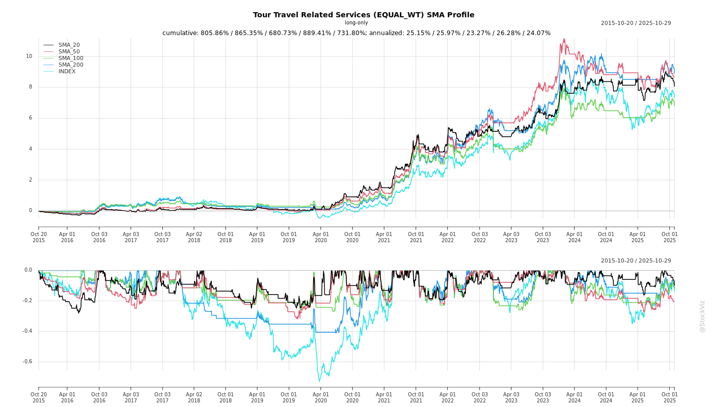
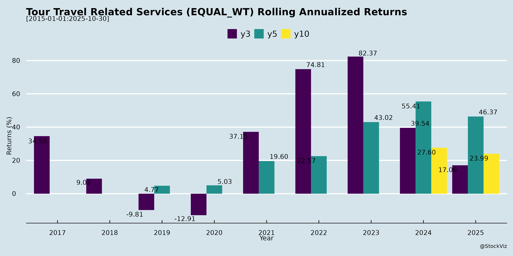
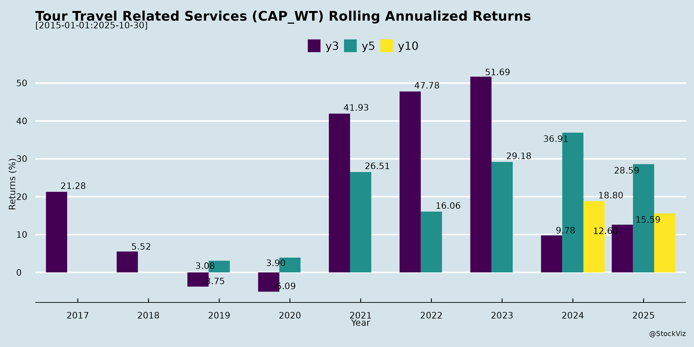

Tour Travel Related Services
Industry Metrics
February 20, 2026
Annual Returns




Cumulative Returns and Drawdowns

SMA Scenarios

Current Distance from SMA
Rolling Returns


Market Cap
EBIT (% of Industry Total)
Revenue (% of Industry Total)
AI Summaries
Analyst
asof: 2025-12-03
Summary
The Indian Tour & Travel sector is fundamentally strong with tailwinds from digitalization, govt infra, and non-air diversification fueling 10-50% YoY growth across players. IRCTC leads in stability (PAT +11%), BLS in diversification (PAT +27%), and EaseMyTrip in international/non-air (hotels +172%). Growth prospects are bright (20%+ CAGR via tech/portals, tourism, global expansion), targeting sustainable margins (30%+). However, headwinds like competition and muted air GBR cap near-term upside, with risks centered on regulation, execution, and macro volatility. Overall Outlook: Positive (Buy/Hold) for diversified players; monitor air recovery and Q3 results. Sector poised for ₹10,000+ Cr annual revenue by FY27 if non-air scales to 25-30%.
Data as of Nov-Dec 2025 transcripts; FY26 estimates extrapolated.
Financial
asof: 2025-12-02
General
asof: 2025-12-03
Investor
asof: 2025-12-03
Meeting
asof: 2025-12-02
Summary Analysis: Indian Tour & Travel Sector (Based on Provided Documents)
The documents cover key players in India’s tour & travel ecosystem—IRCTC (rail/catering/tourism), TBO Tek (B2B travel tech), BLS International (visa services), ixigo (online travel), Thomas Cook (leisure travel), EaseMyTrip (OTA), and Yatra (online travel)—highlighting AGMs, financials, board actions, and regulatory updates as of Sep-Nov 2025. The sector shows resilience with revenue/PAT growth amid digital adoption and global expansion, but faces regulatory headwinds. Below is a structured analysis of tailwinds, headwinds, growth prospects, and key risks.
Tailwinds (Positive Factors)
- Robust Financial Performance & Shareholder Confidence: TBO Tek reported H1 FY26 revenue of ₹10,788 Cr (+24% YoY) and PAT of ₹1,305 Cr, driven by hotels/packages (84% of revenue). IRCTC declared ₹8/share dividend (total ₹640 Cr payout) with 99.99%+ approval on financials. Thomas Cook approved ₹0.45/share dividend. High e-voting turnout (75-82% polled shares) and near-unanimous ordinary resolutions (99%+ favour) signal strong institutional/promoter support.
- Digital & Operational Momentum: E-voting dominance reflects tech-savvy operations. IRCTC’s 82% vote polled via e-voting. TBO’s cash reserves surged to ₹17,688 Cr (+84% QoQ), enabling investments.
- Recovery in Core Segments: Air/hotels rebound (TBO air: ₹1,563 Cr H1; hotels: ₹9,021 Cr). BLS/ixigo AGMs passed director/auditor appointments smoothly, indicating stable governance.
Headwinds (Challenges)
- Regulatory & Compliance Pressures: Yatra fined ₹5.13 lakh (NSE/BSE) for Reg 17(1) non-compliance (board composition, Sep 2025 quarter; 87 days). TBO flagged FEMA show-cause notice (₹712 Cr violations; adjudication ongoing). EaseMyTrip issued corrigendum for preferential allotment notice (UBO/valuation clarifications).
- Shareholder Dissent on Key Items: Thomas Cook saw 28% institutional opposition to ex-gratia for ex-Chairman (special resolution passed at 95.8%). Director re-appointments faced 0.5-1% pushback.
- Forex & Exceptional Costs: TBO noted forex losses (₹34 Cr H1) and FEMA uncertainty; impairments/provisions (e.g., ₹77 Cr exceptional gain but GST provisions).
Growth Prospects
- Inorganic Expansion & Tech Investments: TBO acquired Classic Vacations (US luxury travel; $125 Mn) post-quarter, funded by IPO proceeds (₹1,842 Cr unutilized). EaseMyTrip/ixigo pursuing preferential allotments for equity infusion. TBO’s global subsidiaries (20+ step-downs) drive 93% poll rate and forex gains (₹526 Cr OCI).
- Revenue Diversification: Hotels/packages lead (TBO: 84% revenue, +33% YoY); air stable. IRCTC’s monopoly in rail tourism + dividends signals steady cash flows. Sector poised for 20-25% CAGR via international (TBO Europe/Asia) and B2B2C (ixigo EGM for special rights).
- Capex & Liquidity: TBO’s ₹3,002 Cr investing inflow; IPO utilization (tech/marketing/acquisitions). Yatra/TBO intangible assets up (tech platforms).
Key Risks
| Risk Category | Details | Impact from Docs |
|---|---|---|
| Regulatory/Compliance | FEMA probes (TBO), board fines (Yatra), SEBI scrutiny on preferential issues (EaseMyTrip/ixigo). Potential trading freezes/Z-category shift. | High; ongoing adjudications could lead to penalties (3x contravention under FEMA). |
| Governance/Shareholder | Dissent on executive pay/directors (Thomas Cook); board reconstitution delays. | Medium; could erode confidence if recurring. |
| Financial/Operational | Forex volatility (TBO unrealized gains/losses); impairments (TBO receivables); subdued non-institutional voting (0.15-1.8%). | Medium; tourism cyclicality + input costs (TBO employee expenses +16% YoY). |
| Execution | Acquisition integration (TBO Classic Vacations); IPO fund utilization delays. | Medium; unutilized ₹1,842 Cr at TBO risks opportunity cost. |
| Macro | Travel demand sensitivity (post-COVID recovery assumed); global ops exposure (TBO 20+ subs). | Low-Medium; strong H1 FY26 mitigates. |
Overall Outlook: Bullish with 20%+ growth potential from digital/OTA dominance and M&A, supported by liquidity (TBO/IRCTC). Near-term regulatory overhangs pose tactical risks, but strong PAT/dividends and 99%+ approvals indicate resilience. Monitor FEMA outcomes and board compliances for Q3 FY26. Sector PE likely attractive vs. historicals amid travel rebound.
Press Release
asof: 2025-12-03
Copyright © 2023 SAS Data Analytics Pvt. Ltd. All rights reserved.